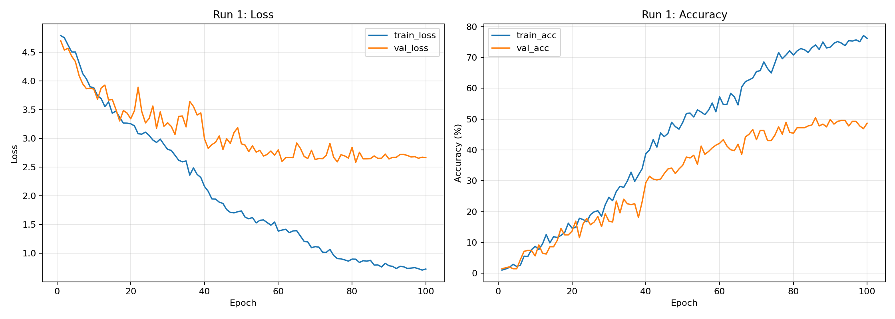
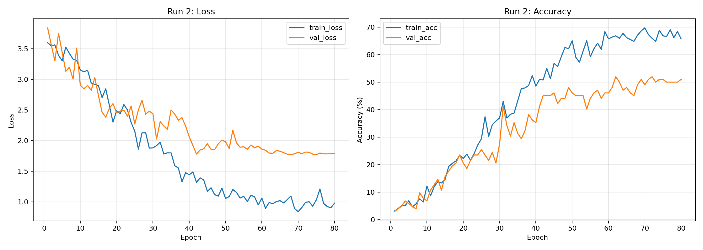
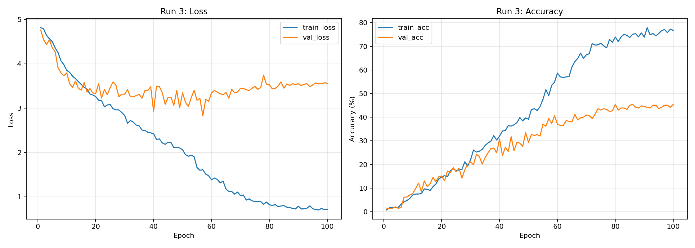
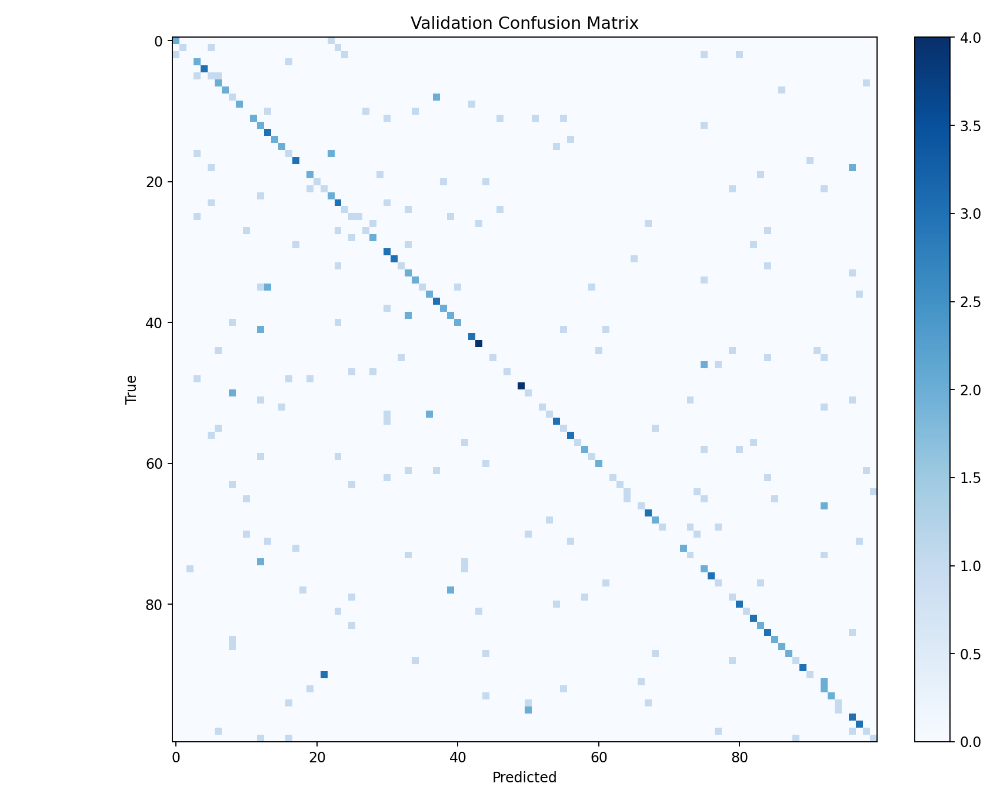
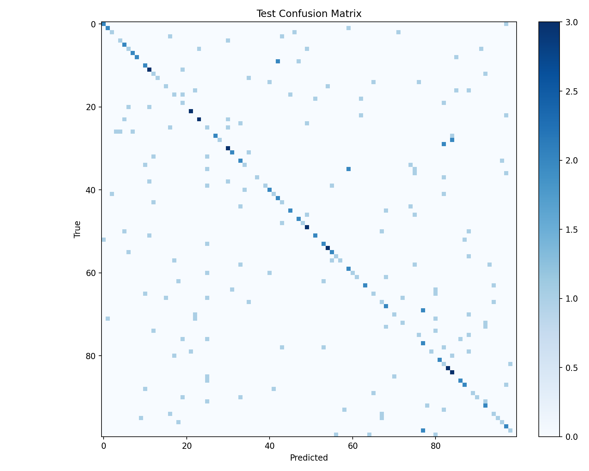
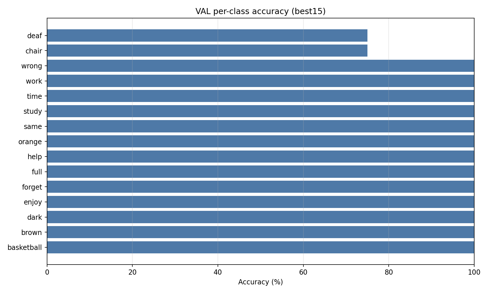
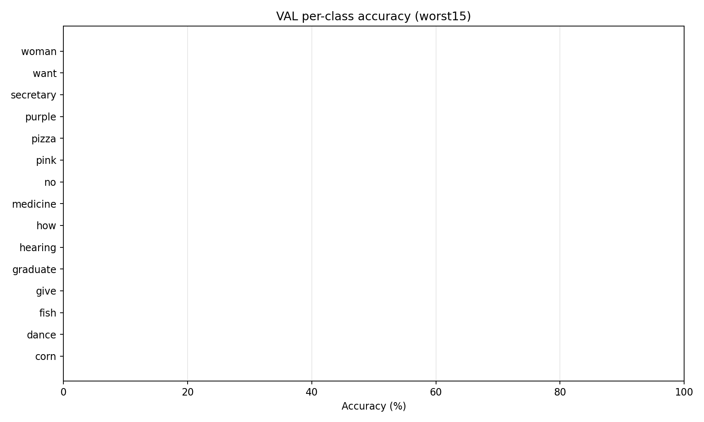
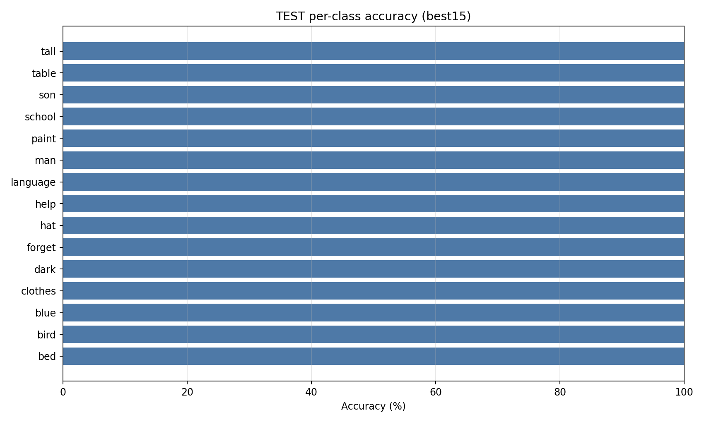
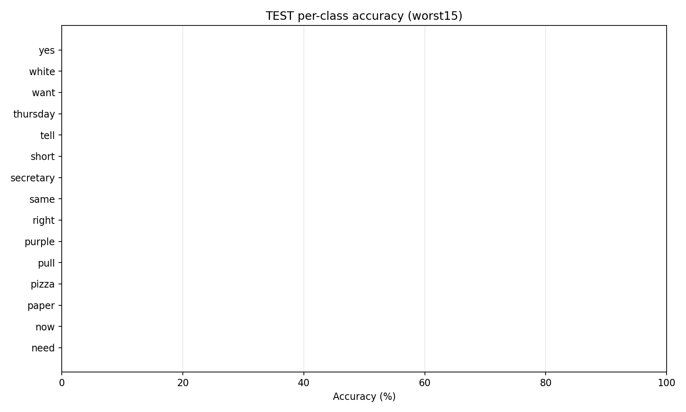

WLASL Visual Report =================== Parsed runs: 3 Latest run epochs: 100 Latest run final train acc: 76.74% Latest run final val acc: 45.40% Latest run best val acc: 45.40% Checkpoint val acc (recomputed): 45.40% Checkpoint test acc (recomputed): 41.09%








